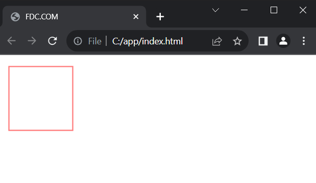
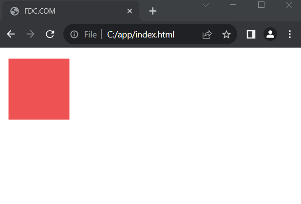
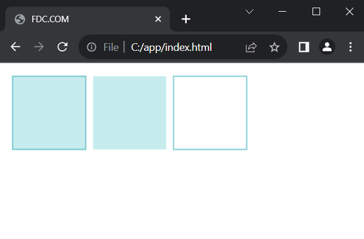
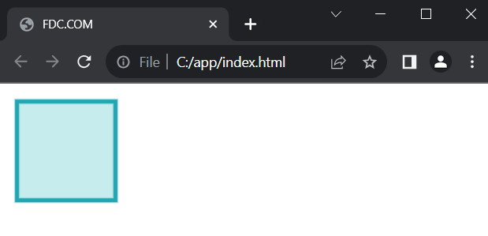
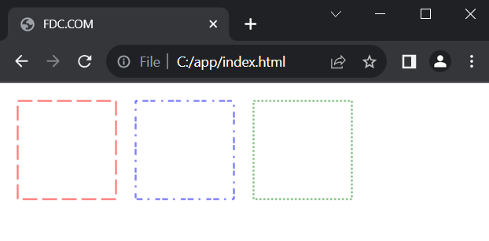
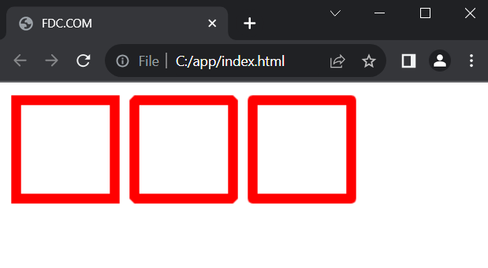
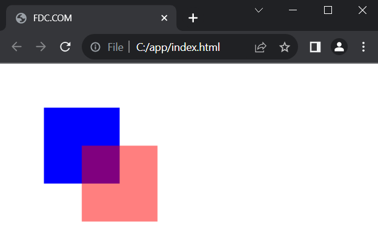

Setări de desen.
Contextul elementului canvas - obiectul CanvasRenderingContext2D oferă o serie de proprietăți
prin care se poate configura desenul pe canvas. Printre aceste proprietăți se numără
următoarele:
- strokeStyle: stabilește culoarea
liniilor sau a conturului. Implicit este setată culoarea neagră
- fillStyle: stabilește culoarea de
umplere a formelor. Implicit este setată culoarea neagră
- lineWidth: stabilește grosimea
liniilor. Implicit este 1.0
- lineJoin: stabilește stilul de
îmbinare a liniilor
- globalAlpha: stabilește
transparența desenului pe canvas
- setLineDash: creează o linie din
segmente scurte
În tema anterioară, când am desenat dreptunghiuri, nu am setat
explicit nicio culoare, astfel că pentru culoarea liniilor și umplerea dreptunghiurilor s-a
folosit culoarea implicită - negru. Acum vom folosi alte culori. Culoarea poate fi definită
în diferite formate:
- Ca nume de culoare, de exemplu, "red" sau
"green"
- Ca valoare hexazecimală a culorii, de exemplu,
"#00FFFF"
- Ca valoare în format rgb, de exemplu, "rgb(0, 0,
255)"
- Ca valoare în format rgba, de exemplu, "rgba(0, 0, 255,
0.5)"
De exemplu, vom seta culoarea conturului sau a granițelor formelor folosind
proprietatea strokeStyle:
|
<!DOCTYPE html>
<html>
<head>
<meta charset="utf-8" />
<title>FDC.COM</title>
</head>
<body>
<canvas id="canvas" width="400" height="250"></canvas>
<script>
const canvas = document.getElementById("canvas");
const context = canvas.getContext("2d");
context.strokeStyle = "#ff0000"; // setăm culoarea conturului formei
context.strokeRect(10,
10, 100, 100);
</script>
</body>
</html>
|

În acest caz, culoarea conturului setată este roșu sau
"#ff0000":
Vom seta culoarea de umplere folosind proprietatea fillStyle:
|
const canvas = document.getElementById("canvas");
const context = canvas.getContext("2d");
context.fillStyle = "#ee5253"; // setăm culoarea de umplere a formei
context.fillRect(10, 10, 100,
100);
|

Desigur, putem combina mai multe metode:
|
const canvas = document.getElementById("canvas");
const context = canvas.getContext("2d");
context.fillStyle = "#c7ecee"; // setăm culoarea de umplere a formei
context.fillRect(10, 10, 100,
100);
context.strokeStyle = "#22a6b3"; // setăm culoarea conturului formei
context.strokeRect(10,
10, 100, 100);
context.fillRect(120, 10, 100,
100); // dreptunghi fără graniță
context.strokeRect(230,
10, 100, 100); // dreptunghi fără umplere
|

Grosimea liniilor.
Proprietatea lineWidth permite
să setezi grosimea liniei:
|
const canvas = document.getElementById("canvas");
const context = canvas.getContext("2d");
context.fillStyle = "#c7ecee"; // setăm culoarea de umplere a formei
context.fillRect(10, 10, 100,
100);
context.strokeStyle = "#22a6b3"; // setăm culoarea conturului formei
context.lineWidth = 4.5;
// setăm grosimea
liniei
context.strokeRect(10, 10, 100, 100);
|

setLineDash.
Metoda setLineDash() acceptă ca parametru un array de numere, care stabilesc distanțele între
linii. De exemplu:
|
const canvas = document.getElementById("canvas");
const context = canvas.getContext("2d");
context.strokeStyle = "red";
context.setLineDash([15,5]);
context.strokeRect(10,
10, 100, 100);
context.strokeStyle = "blue";
context.setLineDash([2,5,6]);
context.strokeRect(130,
10, 100, 100);
context.strokeStyle = "green";
context.setLineDash([2]);
context.strokeRect(250, 10,
100, 100);
|

Tipul de îmbinare a liniilor.
Proprietatea lineJoin se
referă la tipul de îmbinare a liniilor într-o formă. Poate lua următoarele
valori:
- miter: îmbinări drepte care
formează unghiuri drepte. Aceasta este valoarea implicită
- round: îmbinări rotunjite
- bevel: îmbinări în
formă de pânză
|
const canvas = document.getElementById("canvas");
const context = canvas.getContext("2d");
context.strokeStyle = "red";
context.lineWidth = 10;
context.lineJoin = "miter";
context.strokeRect(10, 10,
100, 100);
context.lineJoin = "bevel";
context.strokeRect(130,
10, 100, 100);
context.lineJoin =
"round";
context.strokeRect(250,
10, 100, 100);
|

Transparența.
Proprietatea globalAlpha stabilește transparența desenului. Poate accepta ca valoare un număr de la 0
(complet transparent) la 1.0 (opac):
|
const canvas = document.getElementById("canvas");
const context = canvas.getContext("2d");
context.fillStyle = "blue";
context.fillRect(50, 50,
100, 100);
context.globalAlpha =
0.5;
context.fillStyle = "red";
context.fillRect(100, 100,
100, 100);
|
Aici pe canvas sunt afișate două dreptunghiuri: unul albastru și
unul roșu. Dar înainte de a afișa dreptunghiul roșu, este setată transparența
desenului, astfel încât prin dreptunghiul roșu putem vedea și pe cel albastru.
